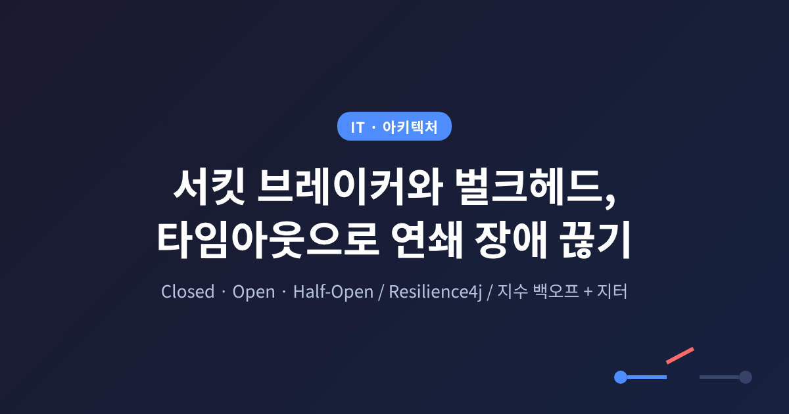
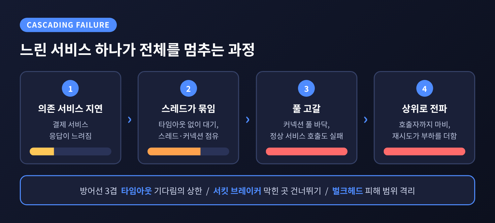
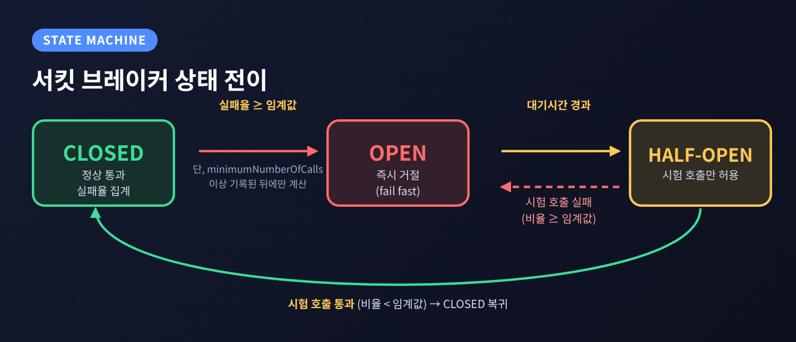
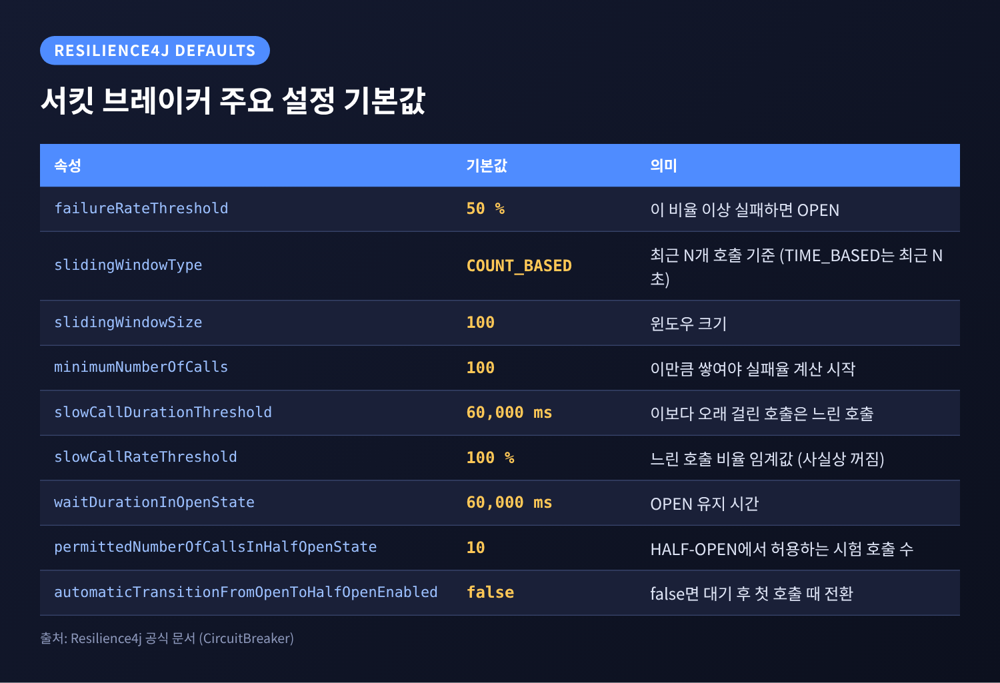
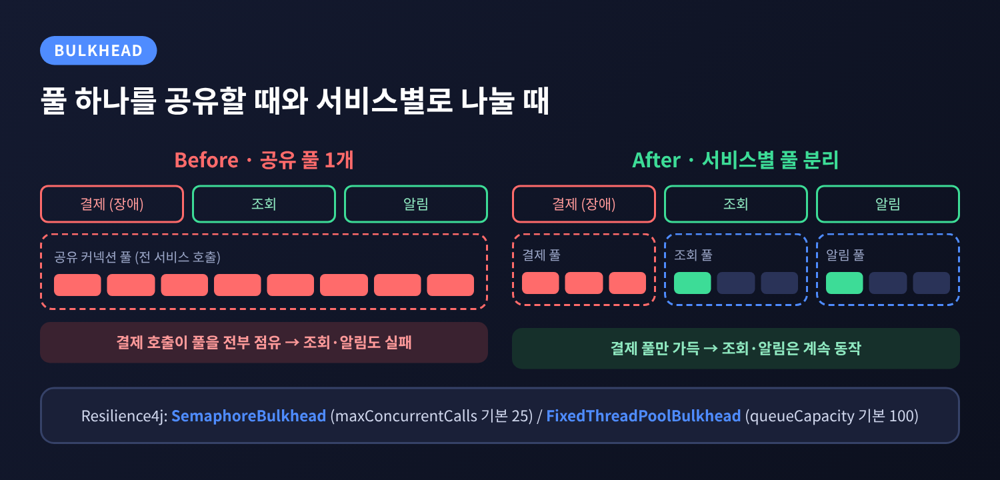
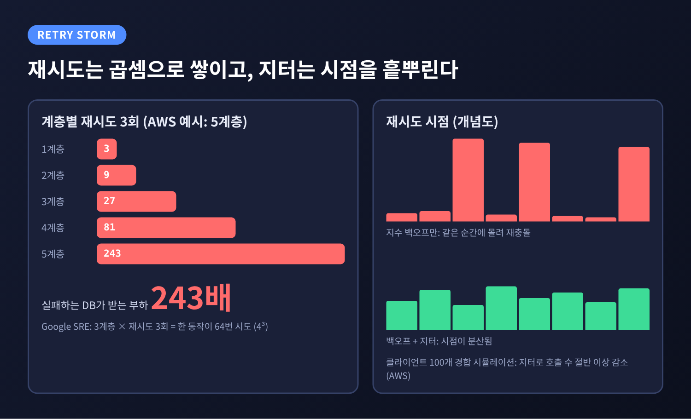

이번 글에서는 마이크로서비스에서 연쇄 장애를 끊는 세 가지 장치, 서킷 브레이커와 벌크헤드, 타임아웃을 정리해 보겠습니다.
핵심은 이렇습니다. 느려진 의존 서비스를 기다리지 말고, 자원을 칸막이로 나누고, 재시도는 줄이고 흩뿌리라는 것입니다.
Spring 개발자가 바로 쓸 수 있도록 Resilience4j 설정도 함께 다룹니다.
Google SRE Book은 연쇄 장애를 "양의 되먹임으로 시간이 지나며 커지는 장애"로 정의합니다.
한 부분이 실패하면 다른 부분이 실패할 확률이 함께 올라가는 구조입니다.
가장 흔한 원인은 서버 과부하입니다.
한 클러스터가 죽으면 그 몫의 트래픽이 남은 곳으로 쏠립니다. 1,000 QPS이던 부하가 1,200 QPS가 되는 식입니다.
여기에 CPU, 메모리, 스레드, 파일 디스크립터 같은 자원 고갈이 겹칩니다.
마이크로서비스에서는 이 과정이 더 은밀합니다.
Azure 아키텍처 문서에 따르면, 응답하지 않는 서비스를 기다리는 호출은 스레드와 메모리, DB 커넥션을 붙잡고 놓지 않습니다.
커넥션 풀이 바닥나면 멀쩡한 다른 서비스를 부르는 호출까지 실패합니다.
장애 하나가 호출 사슬을 타고 거슬러 올라가는 셈입니다.

방어선은 세 겹입니다.
오래 기다리지 않는 타임아웃, 막힌 곳을 아예 건너뛰는 서킷 브레이커, 피해 범위를 가두는 벌크헤드입니다.
세 장치 중 가장 먼저 둘 것은 타임아웃입니다.
AWS Builders' Library의 Marc Brooker는 같은 머신 안의 프로세스 간 호출까지 포함해 모든 원격 호출에 타임아웃을 걸라고 말합니다.
값은 감으로 정하지 않습니다.
허용할 오탐 타임아웃 비율을 먼저 정합니다. 글의 예시는 0.1%입니다.
그다음 다운스트림 서비스의 같은 백분위 지연, 예시에서는 p99.9를 타임아웃으로 삼습니다.
인터넷을 건너는 호출이라면 최악의 네트워크 지연을 더하고, p99.9가 p50과 가까우면 여유를 더 둡니다.
너무 짧아도 문제입니다.
AWS가 소개한 사례에서는 약 20ms 타임아웃이 배포 직후 TLS를 포함한 연결 설정 시간에 걸려 간헐적 타임아웃을 냈습니다.
프로세스가 시작될 때 연결을 미리 맺어 두는 것으로 해결했다고 합니다.
Google SRE Book은 한 걸음 더 나아가 데드라인을 호출 사슬에 전파하라고 권합니다.
30초 데드라인에서 7초를 썼다면 다음 호출에는 23초만 줍니다.
마감 안에 끝낼 수 없는 일은 아예 시작하지 않는 것이 요점입니다.
Spring에서는 Resilience4j의 TimeLimiter가 이 역할을 맡습니다.
CompletionStage나 Future의 실행 시간을 제한하며, 논블로킹으로는 ScheduledExecutorService를 이용하는 방식이 있습니다.
다만 이 문서에서 TimeLimiter의 기본값은 확인되지 않았으니 명시적으로 값을 지정하시길 권합니다.
서킷 브레이커는 원격 호출을 감싸는 상태 기계입니다.
Martin Fowler가 Michael Nygard의 《Release It》에서 대중화된 패턴으로 소개했고, 실패가 쌓이면 호출 자체를 하지 않고 즉시 오류를 돌려줍니다.
Azure 문서가 정리한 상태는 셋입니다.

Half-Open의 존재 이유는 분명합니다.
막 회복하는 서비스에 밀린 요청이 한꺼번에 쏟아지는 일을 막기 위해서입니다.
Open 시간이 너무 길면 복구된 뒤에도 호출이 막히고, 너무 짧으면 상태가 계속 요동칩니다.
한 가지 짚어 둘 점이 있습니다.
AWS Builders' Library는 서킷 브레이커가 테스트하기 어려운 모달 동작을 만들고 복구 시간을 크게 늘릴 수 있다고 경고합니다.
Azure 문서는 반대로 연쇄 장애를 막는 대표 수단으로 꼽습니다.
어느 한쪽이 틀렸다기보다, 도입할 때 상태 변화를 로깅하고 알림을 거는 운영 장치가 함께 있어야 한다는 뜻으로 읽힙니다.
Fowler도 모든 상태 변경을 기록하고, 운영자가 수동으로 trip과 reset을 할 수 있어야 한다고 적었습니다.
Resilience4j는 "얼마나 실패하면 열 것인가"를 슬라이딩 윈도우로 계산합니다.
공식 문서의 기본값부터 보겠습니다.

윈도우는 두 종류입니다.
기본 설정에서는 최근 100개 호출 중 실패율이 50% 이상이면 열립니다.
단, minimumNumberOfCalls(기본 100) 이상 쌓이기 전에는 비율을 계산하지 않습니다.
호출이 드문 서비스에서는 이 기본값이 한참 동안 작동하지 않을 수 있습니다. 트래픽에 맞춰 낮추어야 합니다.
느린 호출도 실패로 취급할 수 있습니다.
slowCallDurationThreshold(기본 60초)보다 오래 걸린 호출의 비율이 slowCallRateThreshold(기본 100%) 이상이면 역시 열립니다.
기본값 100%는 사실상 꺼져 있는 것과 같으니, 지연을 감지하려면 직접 낮춰야 합니다.
예외 처리에도 요령이 있습니다.
기본은 모든 예외를 실패로 셉니다. 하지만 4xx처럼 호출자 잘못인 예외까지 세면 엉뚱하게 열립니다.
ignoreExceptions에 넣은 예외는 성공도 실패도 아닌 것으로 처리되고, recordExceptions보다 우선합니다.
Open 이후에는 waitDurationInOpenState(기본 60초) 뒤에 Half-Open이 되어 10건(permittedNumberOfCallsInHalfOpenState 기본값)의 시험 호출을 허용합니다.
automaticTransitionFromOpenToHalfOpenEnabled가 false(기본)이면 대기 후 첫 호출이 들어와야 전환됩니다.
벌크헤드는 선박의 격벽에서 이름을 땄습니다.
한 칸이 침수돼도 배 전체가 가라앉지 않게 하는 구조입니다.
Azure 문서의 핵심 예시는 다운스트림 서비스마다 커넥션 풀을 따로 두는 것입니다.
서비스 A가 죽어도 A용 풀만 영향을 받고, B와 C를 부르는 호출은 계속 동작합니다.
Resilience4j는 두 방식을 제공합니다.
Hystrix와 달리 세마포어 방식에는 별도의 그림자 스레드 풀이 없습니다.
클라이언트가 자기 스레드 풀 크기를 벌크헤드 설정과 맞춰야 합니다.
Google SRE Book에는 한 클라이언트가 스레드의 25% 이상을 쓰지 못하게 제한하는 예가 나옵니다.
특정 호출자 하나가 전체를 잠식하지 못하게 하는 같은 발상입니다.

대가도 있습니다.
Azure 문서는 자원 효율이 떨어지고 구성이 복잡해진다는 점을 한계로 듭니다.
칸을 얼마나 잘게 나눌지는 업무 경계와 SLA를 보고 정해야 하며, 칸마다 성능을 모니터링해야 합니다.
타임아웃이 나면 재시도하고 싶어집니다. 그러나 재시도는 부하를 더 얹는 일입니다.
AWS는 이를 "이기적"이라고 표현합니다.
숫자로 보면 심각성이 드러납니다.
5계층 호출에서 계층마다 3번씩 재시도하면, 실패하는 데이터베이스는 3의 5제곱, 243배의 부하를 받는다고 AWS는 설명합니다.
Google SRE Book의 예는 3개 계층에서 계층마다 3번 재시도해, 한 동작이 4의 3제곱인 64번 시도로 불어나는 경우입니다.
두 글의 계산 기준은 다르지만 결론은 같습니다. 재시도는 곱셈으로 쌓입니다.

처방은 여럿입니다.
그리고 지수 백오프에는 반드시 지터를 더합니다.
간격을 점점 늘려도, 같은 순간에 실패한 클라이언트들이 같은 순간에 다시 몰리면 충돌은 반복됩니다.
Marc Brooker의 2015년 글은 클라이언트 100개가 경합하는 시뮬레이션에서 지터가 호출 수를 절반 넘게 줄였다고 보고합니다.
지터 방식끼리는 Full Jitter와 Equal Jitter의 호출 수가 비슷하고, Equal Jitter가 완료까지 더 오래 걸려 가장 불리했습니다.
글의 구체적 공식과 그래프 수치는 본문 텍스트로 확인되지 않아 여기서는 방향만 옮깁니다.
Resilience4j Retry의 기본값은 최초 호출을 포함한 3회 시도, 500ms 고정 대기입니다.
고정 대기가 기본이라는 점에 주의하셔야 합니다. 백오프와 무작위성은 IntervalFunction으로 직접 지정해야 합니다.
Spring Boot 3에서는 resilience4j-spring-boot3 스타터에 actuator와 aop 스타터를 함께 추가합니다.
설정은 application.yml의 resilience4j 아래에 인스턴스별로 둡니다.
아래는 값을 임의로 정한 예시입니다. 서비스 특성에 맞게 조정하셔야 합니다.
resilience4j:
circuitbreaker:
instances:
payment:
slidingWindowType: TIME_BASED
slidingWindowSize: 10 # 최근 10초
minimumNumberOfCalls: 20
failureRateThreshold: 50
slowCallDurationThreshold: 2s
slowCallRateThreshold: 80
waitDurationInOpenState: 30s
permittedNumberOfCallsInHalfOpenState: 5
ignoreExceptions:
- com.example.BusinessException
bulkhead:
instances:
payment:
maxConcurrentCalls: 20
maxWaitDuration: 0
@CircuitBreaker(name = "payment", fallbackMethod = "fallback")
@Bulkhead(name = "payment")
public PaymentResult pay(Order order) { ... }
private PaymentResult fallback(Order order, Throwable t) {
return PaymentResult.pending(order.id());
}
여기서 순서가 중요합니다.
기본 적용 순서는 Retry가 가장 바깥이고, 그 안쪽으로 CircuitBreaker, RateLimiter, TimeLimiter, Bulkhead 순입니다.
즉 Retry가 서킷 브레이커를 감싸므로, 브레이커가 열려 CallNotPermittedException이 나도 재시도가 이를 다시 시도할 수 있습니다.
retryAspectOrder와 circuitBreakerAspectOrder로 순서를 바꿀 수 있으며, 값이 클수록 우선순위가 높습니다.
Azure 문서도 브레이커가 일시적 오류가 아니라고 알리면 재시도를 멈추라고 말합니다.
폴백 메서드는 같은 클래스에 있어야 하고, 원 메서드와 시그니처가 같되 예외 파라미터가 하나 더 붙습니다.
폴백이 서킷 상태와 무관하게 실행된다는 점도 기억해 두십시오.
참고로 Hystrix는 유지보수 모드로 들어갔고, Netflix 스스로 신규 프로젝트에는 Resilience4j 같은 도구를 쓴다고 밝혔습니다.
Netflix의 관심은 사전 설정값보다 실시간 성능에 반응하는 적응형 동시성 제한으로 옮겨 갔다고 합니다.
정적 임계값은 출발점일 뿐이라는 점도 함께 새겨 둘 만합니다.
정리하면 이렇습니다.
타임아웃은 기다림의 상한을 정하고, 서킷 브레이커는 막힌 곳을 건너뛰고, 벌크헤드는 피해 범위를 가둡니다. 재시도는 한 지점에서, 지터와 예산을 붙여 쓰는 것이 안전합니다.
"회복탄력성은 잘 실패하는 설계입니다."
기본값을 그대로 쓰면 보호 장치가 정작 필요한 순간에 늦게 움직일 수도 있습니다.
각 임계값이 우리 서비스의 트래픽과 지연 분포에서 무엇을 의미하는지 한 번쯤 직접 따져 보시기를 권합니다. 그 과정이 장애 하나를 작은 사고로 끝내는 가장 확실한 준비일 것입니다.